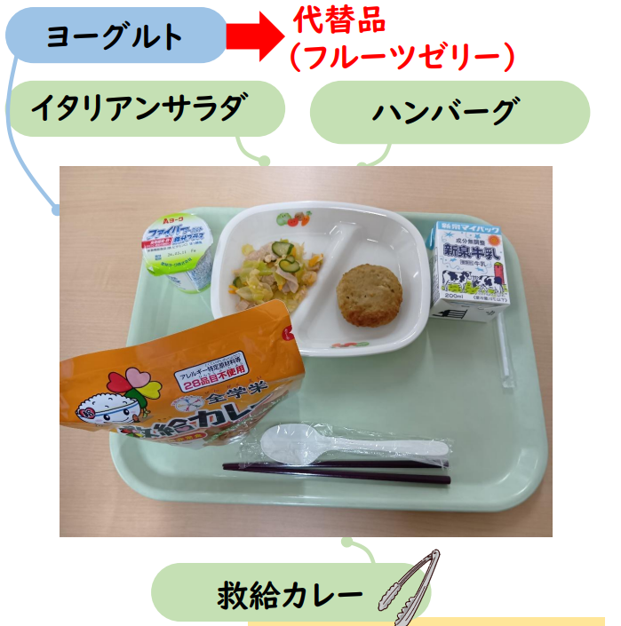

もう自分が中学校を卒業するまで1週間もない。
そして今日が中学校生活最後の給食の日だった。
しかしあまりにも給食の内容がひどすぎた。
給食の内容
早速今日の給食の内容を貼ろう。

▲ なんだよ救給カレーって。なんだよ。
どうだ。あまりにもひどい。しかもあんま美味くない。
言っておくがいつもはもっとましだ。
いつもは小おかず2種類と汁物とごはん(orたまにパン)と牛乳だ。
大おかずという名の汁物もご飯もない。カレー内には肉すらない。
カレーなのにしめじとかの類のまっずいキノコも入っている。
好き嫌いはないと思っていたのだが、災害時以外食いたくないと思った。
こんな給食になった理由考察
これだけでもつまらない。理由でも考察してみよう。
ありそうなのはこれぐらいだ。
以上だ。
ローリングストックだとしたら期限は'28年まで持つものだったからそれはない。
3月は東日本大震災が起きた月だからというのならば11日でいい。
本当に理由が見当たらない。
AIの考察
わからないことはAIに聞いてみよう。
いつものようにGeminiに考察させた。
1. 「防災の日」や避難訓練に合わせた防災教育
一番多い理由がこれです。
災害が起きた際、ライフライン（電気・ガス・水道）が止まった状態でも食べられる**「非常食」を体験する**という目的です。
実体験: 実際に食べてみることで「非常食って意外とおいしいんだな」とか「温めなくても食べられるんだ」という学びになります。
意識向上: 避難訓練とセットで実施されることが多く、防災意識を高めるきっかけとして導入されます。
2. 給食センターのメンテナンスや設備点検
給食を作る大きな施設（給食センターや学校の給食室）は、定期的に機械の点検や清掃が必要です。
調理工程の短縮: 救給カレーは調理工程がほとんどない（配るだけ、または軽く温めるだけ）ため、施設がフル稼働できない日でも提供が可能です。
断水対策: 水を大量に使えない工事などの日に、食器を洗わなくて済むよう容器付きのメニューが選ばれることもあります。
3. 食材の「ローリングストック」の入れ替え
自治体や学校は、災害時に備えて大量の非常食を備蓄しています。
賞味期限: 非常食には期限があるため、期限が切れる前に給食で提供し、新しく買い直す「ローリングストック」という仕組みをとっている場合があります。
Gemini君は自分が思いついてもいないことを言ってくれる。
メンテナンスだけは1番ありそうだ。
というかこんなクソ給食提供しやがってHaha今日分の給食費返せよ。